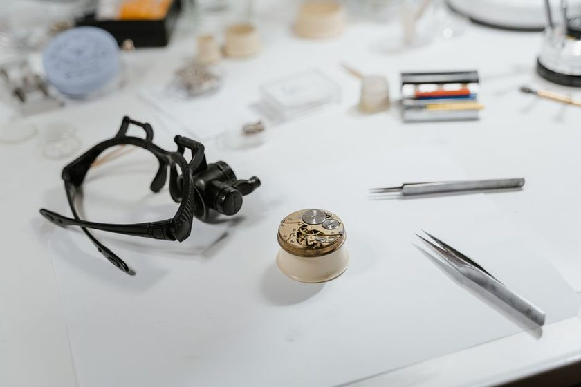
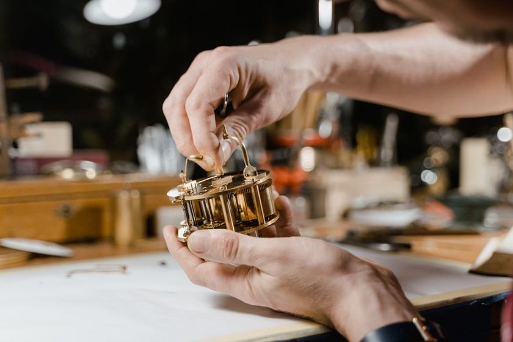
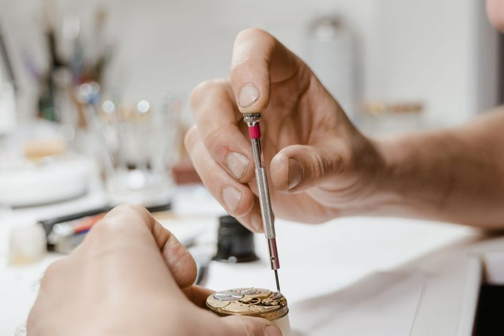

"Beat rate" is simply how many times per hour a balance wheel beats — commonly 18,000, 21,600, 28,800, or 36,000 vibrations per hour.
Beat Rate began as a shared document between three people servicing their own family watches, comparing timegrapher readings and arguing about oils over email. It became a public journal because the notes kept getting long enough to be useful to someone else1.
We write about the mechanics we can measure at a kitchen table: amplitude, beat error, rate in different positions, and what changes after a cleaning or an oil change. We are not a retailer, we do not review commercial watch brands, and we do not accept payment for coverage of any product, oil, or tool.
Our mission
To document mechanical watch servicing in plain language, with enough technical honesty that a careful reader could follow along on their own movement — and enough restraint that we never pretend a home bench replaces a trained watchmaker for anything beyond routine care.
Who writes this

Started keeping a service log for her grandfather's watches in 2019 and never stopped. Writes most of the regulation pieces.

Keeps the oil comparison spreadsheets that everyone else in the group quietly relies on.

Runs the kitchen-table bench series and answers most of the reader questions that reach the FAQ.
Content policy
- 1Every article is written from our own bench notes or from documented technical references we can point to.
- 2We do not accept sponsored posts, affiliate placements, or paid product mentions.
- 3Numbers are reported as ranges and tendencies, not guarantees — a movement is a physical object with variation.
- 4Corrections are posted openly when a reader points out an error; we would rather be corrected than confidently wrong.